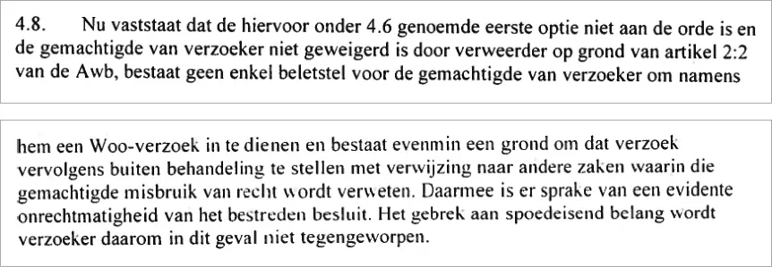
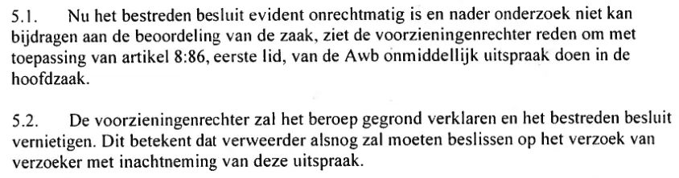

Beweisstück · Urteil
Bezirksgericht Den Haag, Urteil vom 18. Juli 2023 (ECLI:NL:RBDHA:2023:17841)
Der Stimmenabschnitt zitiert zwei Sätze: Der erste steht in Rn. 4.8 des Urteils, der zweite in der Inhaltsangabe auf rechtspraak.nl. Beide stehen unten, dazwischen die Schlussfolgerung des Richters.
Rn. 4.8 · Die Entscheidung ist offensichtlich rechtswidrig
„4.8. Da feststeht, dass die oben unter 4.6 genannte erste Option nicht einschlägig ist und der Bevollmächtigte des Antragstellers vom Antragsgegner nicht gestützt auf Artikel 2:2 Awb zurückgewiesen worden ist, besteht für den Bevollmächtigten des Antragstellers keinerlei Hindernis, in dessen Namen einen Woo-Antrag zu stellen, und es besteht ebenso wenig ein Grund, diesen Antrag anschließend unter Verweis auf andere Verfahren, in denen diesem Bevollmächtigten Rechtsmissbrauch vorgeworfen wird, nicht zur Bearbeitung anzunehmen. Damit liegt eine offensichtliche Rechtswidrigkeit der angefochtenen Entscheidung vor. Das Fehlen eines dringenden Interesses wird dem Antragsteller daher in diesem Fall nicht entgegengehalten.“ Rn. 4.8, die letzte vor der Überschrift „Conclusie en gevolgen“ (Schlussfolgerung und Folgen). „Beletstel“ ist im Original ein Schreibfehler für „beletsel“ (Hindernis) und wurde so belassen. Aus dem Niederländischen übersetzt; der Originaltext steht unten.
“4.8. Nu vaststaat dat de hiervoor onder 4.6 genoemde eerste optie niet aan de orde is en de gemachtigde van verzoeker niet geweigerd is door verweerder op grond van artikel 2:2 van de Awb, bestaat geen enkel beletstel voor de gemachtigde van verzoeker om namens hem een Woo-verzoek in te dienen en bestaat evenmin een grond om dat verzoek vervolgens buiten behandeling te stellen met verwijzing naar andere zaken waarin die gemachtigde misbruik van recht wordt verweten. Daarmee is er sprake van een evidente onrechtmatigheid van het bestreden besluit. Het gebrek aan spoedeisend belang wordt verzoeker daarom in dit geval niet tegengeworpen.” Originaltext

Rn. 5.1 und 5.2 · Schlussfolgerung und Folgen
„5.1. Da die angefochtene Entscheidung offensichtlich rechtswidrig ist und eine weitere Untersuchung nicht zur Beurteilung der Sache beitragen kann, sieht der Richter im Eilverfahren Anlass, in Anwendung von Artikel 8:86 Absatz 1 Awb sofort in der Hauptsache zu entscheiden. 5.2. Der Richter im Eilverfahren wird die Klage für begründet erklären und die angefochtene Entscheidung aufheben. Das bedeutet, dass der Antragsgegner unter Beachtung dieses Urteils doch noch über den Antrag des Antragstellers entscheiden muss.“
Seite 6 des Urteils, Rn. 5.1 und 5.2, unter der Überschrift „Conclusie en gevolgen“ (Schlussfolgerung und Folgen). Aus dem Niederländischen übersetzt; der Originaltext steht unten. „Verweerder“ (Antragsgegner) ist der Nationale Ombudsmann. Der Tenor auf Seite 7 zählt die Entscheidungen in vier Zeilen auf: Die Klage wird für begründet erklärt, die angefochtene Entscheidung aufgehoben, eine neue Entscheidung über den Woo-Antrag angeordnet und der Antrag auf Erlass einer einstweiligen Anordnung abgelehnt. Die auf deeplink.
“5.1. Nu het bestreden besluit evident onrechtmatig is en nader onderzoek niet kan bijdragen aan de beoordeling van de zaak, ziet de voorzieningenrechter reden om met toepassing van artikel 8:86, eerste lid, van de Awb onmiddellijk uitspraak doen in de hoofdzaak. 5.2. De voorzieningenrechter zal het beroep gegrond verklaren en het bestreden besluit vernietigen. Dit betekent dat verweerder alsnog zal moeten beslissen op het verzoek van verzoeker met inachtneming van deze uitspraak.” Originaltext

Inhaltsangabe auf rechtspraak.nl
„Damit liegt eine offensichtliche Rechtswidrigkeit der angefochtenen Entscheidung vor. Der Antragsgegner muss nun doch noch über den Woo-Antrag entscheiden.“ Die letzten beiden Sätze der Inhaltsangabe, die rechtspraak.nl dem veröffentlichten Urteil voranstellt. Diese Zusammenfassung stammt von rechtspraak.nl und ist nicht Teil des Urteils selbst; der erste Satz steht wörtlich in Rn. 4.8, der zweite fasst Rn. 5.2 zusammen. „Verweerder“ (Antragsgegner) ist der Nationale Ombudsmann. Aus dem Niederländischen übersetzt; der Originaltext steht unten.
“Daarmee is er sprake van een evidente onrechtmatigheid van het bestreden besluit. Verweerder zal alsnog op het Woo-verzoek moeten beslissen.” Originaltext
Warum dieses Dokument wichtig ist
In diesem Urteil vom 18. Juli 2023 entschied der Richter im Eilverfahren, dass der Nationale Ombudsmann die Bearbeitung von Giltays Woo-Antrag (Wet open overheid, niederländisches Informationsfreiheitsgesetz) vom 13. April 2023 nicht allein deshalb verweigern durfte, weil bei Giltays Bevollmächtigtem Rechtsmissbrauch angenommen worden war, zumal der Ombudsmann Giltay selbst nichts dergleichen vorwarf. Die angefochtene Entscheidung war daher offensichtlich rechtswidrig, die Klage wurde für begründet erklärt, und der Institution wurde aufgegeben, eine neue Entscheidung über den Antrag zu treffen. Der Essay legt dar, dass der Nationale Ombudsmann die Korrespondenz abbrach und anschließend diesen Antrag auf Herausgabe von Regierungsdokumenten blockierte. Ein zweites Urteil, ECLI:NL:RBDHA:2023:20409, knüpfte später Zwangsgelder an das Ausbleiben einer Entscheidung über einen anderen Woo-Antrag vom 1. September 2023.
Herkunft
- Dokument
- Urteil des Richters im Eilverfahren, der zugleich in der Hauptsache entscheidet, in Anwendung von Artikel 8:86 des Allgemeinen Verwaltungsrechtsgesetzes (Algemene wet bestuursrecht, Awb)
- Gericht
- Bezirksgericht Den Haag, Verwaltungsrecht, Sitzungsort Den Haag
- Datum
- 18. Juli 2023, in öffentlicher Sitzung verkündet; eine Abschrift wurde den Parteien am 19. Juli 2023 übersandt
- Verhandlung
- 20. Juni 2023, gemeinsam verhandelt mit den Anträgen in den Verfahren SGR 23/2898, SGR 23/4651, SGR 23/4664, SGR 23/4666 und SGR 23/4668, über die jeweils gesondert entschieden wurde
- Aktenzeichen
- SGR 23/4662 und SGR 23/4663
- ECLI
- ECLI:NL:RBDHA:2023:17841
- Parteien
- E.F. Giltay aus Den Haag, Antragsteller, unterstützt von einem Bevollmächtigten, gegen den Nationalen Ombudsmann, Antragsgegner
- Richter
- D. Biever, Richter im Eilverfahren; Urkundsbeamter Y.E. de Loos
- Betreff
- Wet open overheid (Woo, niederländisches Informationsfreiheitsgesetz); ein Antrag, der wegen angenommenen Rechtsmissbrauchs durch den Bevollmächtigten des Antragstellers nicht zur Bearbeitung angenommen wurde; Missbrauchsklausel in Artikel 4.6 Woo und Zurückweisung eines Bevollmächtigten nach Artikel 2:2 Awb
- Antrag
- Woo-Antrag vom 13. April 2023 auf Herausgabe aller Dokumente, aus denen hervorgeht, ob über den Antragsteller Kontaktabsprachen getroffen worden waren, ob seine personenbezogenen Daten in einer Datei oder Liste mit solchen Absprachen oder mit ihm zugeschriebenem Verhalten verknüpft worden waren, ob Mitarbeiter ihn als schwierigen Beschwerdeführer eingestuft hatten und ob dies intern oder extern weitergegeben worden war
- Angefochtener Bescheid
- Entscheidung des Nationalen Ombudsmanns vom 14. April 2023, mit der zwölf Woo-Anträge zugleich wegen Rechtsmissbrauchs nicht zur Bearbeitung angenommen wurden
- Ergebnis
- Klage begründet; angefochtene Entscheidung aufgehoben; neue Entscheidung über den Woo-Antrag angeordnet; Antrag auf Erlass einer einstweiligen Anordnung abgelehnt
- Bezüge
- Rn. 4.6 und 4.8 zur Begründung; 5.1 und 5.2 zur Schlussfolgerung; Tenor auf Seite 7; das verwandte Urteil vom 27. Dezember 2023, ECLI:NL:RBDHA:2023:20409, Aktenzeichen SGR 23/6997, mit Zwangsgeldern
- Sprache
- Niederländisch
- Fundstelle
- Rechtspraak.nl, veröffentlicht am 21. November 2023
- Aufbewahrt bei
- Archiv des Autors (Abschrift); die anonymisierte Fassung beim Rat für das Justizwesen (Raad voor de rechtspraak), deeplink.
rechtspraak. nl/ uitspraak? id= ECLI: NL: RBDHA: 2023: 17841 - Quelle
- Nicht anonymisiert, auf dedoofpotgeneraal.
nl/ (7 Seiten)doc/ uitspraak.pdf - Siehe auch
- Nationaler Ombudsmann an Giltay, mit Giltays Brief vom 13. März 2018, 10. April 2018
Zitiert in:
- dem Essay „Das Verbot fiel, das Buch hielt stand“ in den Kapiteln (9) „Für immer festgehalten“ und (11) „Beenden Sie das Schweigen für Srebrenica“
- dem Stimmenabschnitt
- der Biografie des Autors.
Dokument: https://
Zuletzt geändert am 13. September 2026, abgerufen am 4. Oktober 2026.

Diese Seite ist ein Beweisstück zum Buch Der Cover-up-General von Edwin Giltay und zur dazugehörigen Website.